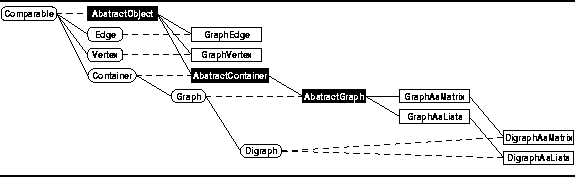

Data Structures and Algorithms
with Object-Oriented Design Patterns in Java
Data Structures and Algorithms
with Object-Oriented Design Patterns in Java
In keeping with the design framework used throughout this text,
we view graphs as specialized containers.
Formally, the graph  is an ordered pair
comprised of two sets--a set of vertices and a set of edges.
Informally, we can view a graph as a container with two compartments,
one which holds vertices and one which holds edges.
There are four kinds of objects--vertices, edges, undirected graphs, and directed graphs.
Accordingly, we define four interfaces:
Vertex, Edge, Graph, and Digraph.
(See Figure
is an ordered pair
comprised of two sets--a set of vertices and a set of edges.
Informally, we can view a graph as a container with two compartments,
one which holds vertices and one which holds edges.
There are four kinds of objects--vertices, edges, undirected graphs, and directed graphs.
Accordingly, we define four interfaces:
Vertex, Edge, Graph, and Digraph.
(See Figure  ).
).

Figure: Object class hierarchy
 Copyright © 1998 by Bruno R. Preiss, P.Eng. All rights reserved.
Copyright © 1998 by Bruno R. Preiss, P.Eng. All rights reserved.